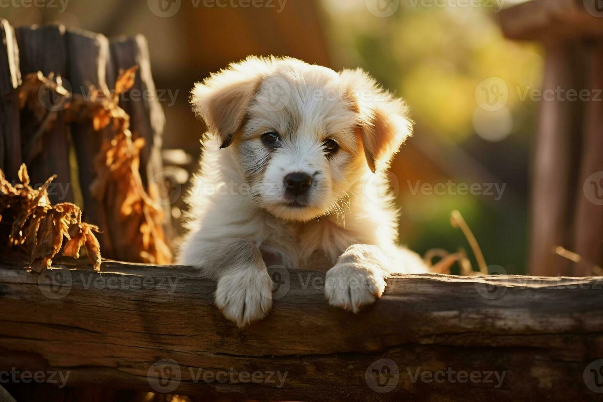
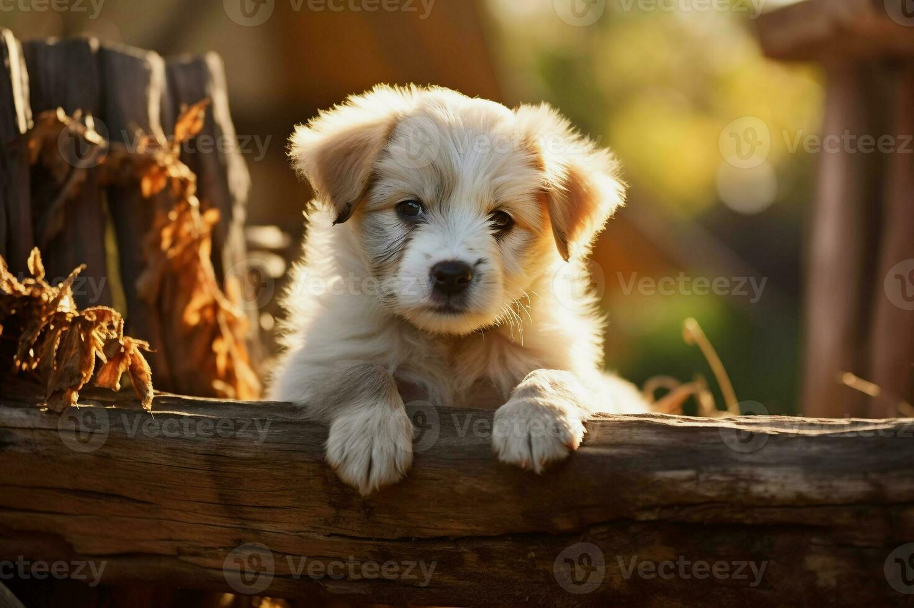

Welcome
Welcome to Clover Farm!
We are a family-run petting farm located in the heart of the Kerry countryside and have been in business for over 80 years. We are open year round and offer a guaranteed fun day out for all the family.
Our Story
The farm was originally run as a dairy enterprise by Tom and Mary O'Brien who purchased it in 1942. In 1988, their son, Michael, took over the reins and opened the petting farm that exists today.
Over the years, Michael expanded the farm with a simple mission: to create a place where families could slow down, reconnect with nature, and meet animals raised with care. What began with a few goats and ponies has grown into a lively haven where three generations of O’Briens now welcome visitors to share in the farm’s long-held charm.
Today, the farm offers a wide range of attractions for all ages and all weathers which are listed below.
Attractions
We offer a wide variety of indoor and outdoor attractions for all weathers and ages as well as delicious home-cooked meals made fresh daily using farm sourced ingredients:
- Small Animal Petting Area
- Grazing Animals Grassland
- Bird Paradise
- Pony Rides
- Seasonal Craft Activities
- Old Farm Machinery Exhibit
- Woodland Walk
- Butterfly Garden
- Cow Milking Demonstrations
- Indoor Soft Play Area
- Outdoor Playground
- Café and Restaurant


 
